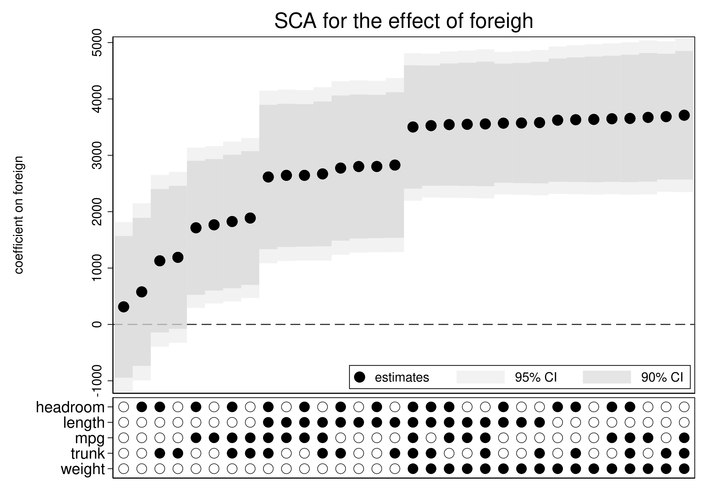
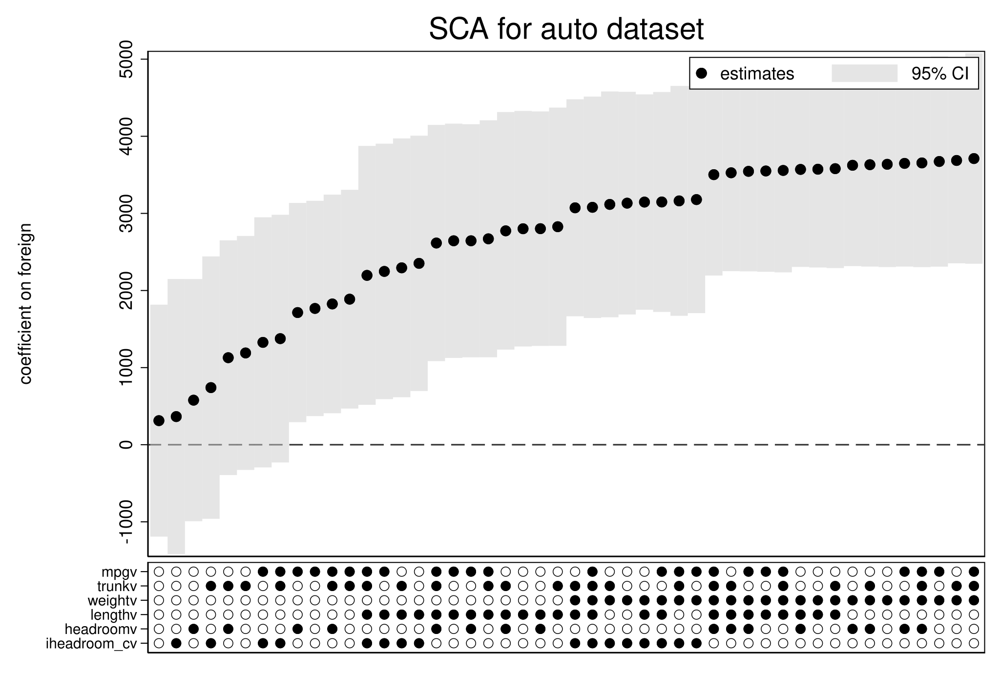

knitr::opts_knit$set(engine.path = list(stata = "C:/Program Files/StataNow19/StataMP-64.exe"))Overview
Research reproducibility topic has been gaining momentum over the past decade. There have been many studies reporting inability to replicate published results and lack of necessary details in methods description. Some journals are addressing this issue by requiring access to study data and executable code. However, while this may provide some reassurance in reliability of the results, the actual choice of analytic methods could be shaped by many assumptions that might not be evident.
There usually isn’t one correct way to analyse data. Instead, empirical studies often have plenty of flexibility in the way data are collected and cleaned as well as in the final model specification. A data cleaning step may involve exclusion of some units with missing data or conversion of a continuous variable to a categorical one or (vice versa). There also might be models equally plausible for the outcome, but having different sets of covariates or functional forms. Each of these small steps may snowball into a reported effect that is overly favorable to researchers’ narrative.
A relatively novel and very promising method that can help to mitigate this issue was proposed in (simonsohn2015better?) and is called Specification Curve Analysis (SCA). The idea behind the method is simple - the researcher is asked to consider multiple plausible ways to analyze the data and show that, jointly, the null hypothesis of no effect can be rejected. It doesn’t mean that all models must result in a statistically significant effect (though, it would make the conclusions very convincing!). However, even if the effect is detected when all specifications are tested simultaneously, this would result in a more objective inference.
Method Details
The method involves the following steps:
- identifying the set of theoretically justified, statistically valid, and non-redundant analytic specifications;
- running the analysis for each specification and displaying the results graphically - this allows the readers to identify consequential specification decisions;
- conducting statistical tests to determine whether, as a whole, results are inconsistent with the null hypothesis.
The first two steps above are self-explanatory. However, the third step is novel. The authors ((simonsohn2020specification?)) proposed three test statistics for the SCA:
median effect estimated across all specifications;
share of specifications that obtain a statistically significant effect in the predicted direction;
average of Z-values across all specifications.
For each of them a sampling distribution can be generating by “resampling under-the-null”. This involves modifying the observed data so that the null hypothesis is known to be true, and then drawing random samples of the modified data. The test statistic of interest is then computed on each of those samples. The resulting distribution is the estimated distribution of the test statistic under the null.
Available Tools
There are several resources available to aid the implementation of the method. I organize them in a table below:
| Language | Package Name | Description |
|---|---|---|
| R | specr | Available on CRAN. Provides functions to set up, run, evaluate and plot the specifications of interest. There is a lot of flexibility in model set-up. However, the package doesn’t have capability to perform the step (iii) above (i.e., the joint testing). |
| R | rdfanalysis | Available only on GitHub. A more comprehensive collection of functions that provides a self-documenting code base that allows researchers to systematically document and explore their researcher degrees of freedom when conducting analyses. Has a shiny front end that helps to explore the findings interactively. |
| Stata | speccurve | One function that can only plot the curve using coefficients stored in the e()-returns. Requires setting up and looping through the models beforehand. |
| Stata | specurve | Depends on Stata 16’s Python (v.3.6) integration and several additional Python modules. The function performs regressions as specified in a provided YAML-formatted file and plots the specification curve. Limited to reghdfe models only, but allows for various combinations of fixed effects and clustering. |
| Stata | specc | Available on SSC and is open for development on GitHub. The package appears to be very flexible in setting up models and enumerating specifications as well as plotting the curve. However, it lacks a simple example to get started. |
| Python | specification_curve | Allows to conduct analysis and plot specification curves. Flexible in model specification and very well documented. While it also can’t perform the joint test (step (iii) of the specification analysis), the author has an example of its manual implementation here. |
It looks like most major statistical programming language have some version of the specification curve implemented. However, as far as I can tell, none of them are capable of performing step (iii), which, arguably, is as important as the curve itself. Therefore, for now, researches have to implement it themselves or contact RCS (research@hbs.edu) for assistance!
Stata Example
Next, I show an example in Stata that loops through several model specifications and then uses the speccurve function in Stata to plot the curve. Before running this code, make sure that the function is installed in Stata by running the following line:
net install speccurve, from("https://raw.githubusercontent.com/martin-andresen/speccurve/master")
The code uses a classic auto data set and specifies several regression models that predict car price using available characteristics. The effect of interest is the coefficient estimated for the indicator foreign.
clear all
sysuse auto, clear
loc no=0
* enumerationg many different specifications using a loop
foreach m in "" "mpg" {
foreach tr in "" "trunk" {
foreach wt in "" "weight" {
foreach ln in "" "length" {
foreach hr in "" "headroom" {
qui reg price foreign `m' `tr' `wt' `ln' `hr'
eststo md`no'
loc ++no
}
}
}
}
}
* plotting a SC with foreign as a parameter of interest
speccurve *, param(foreign) controls title(SCA for the effect of foreigh)
graph export "speccurve1.svg", replace(1978 automobile data)
7. eststo md`no'
8. loc ++no
9. }
10. }
11. }
12. }
13. }
file speccurve1.svg saved as SVG formatThe code above produced the following specification curve:

Looks like including the weight variable in the model had a notable effect on the coefficient for foreign. Function speccurve is somewhat limited in that it doesn’t work with models that have factors as controls. Next, I show a workaround for the latter case:
clear all
sysuse auto, clear
egen headroom_c = group(headroom)
loc no=0
foreach m in "" "mpg" {
foreach tr in "" "trunk" {
foreach wt in "" "weight" {
foreach ln in "" "length" {
foreach hr in "" "headroom" "i.headroom_c"{
qui reg price foreign `m' `tr' `wt' `ln' `hr'
qui estadd scalar mpgv = 0, replace
qui estadd scalar trunkv = 0, replace
qui estadd scalar weightv = 0, replace
qui estadd scalar lengthv = 0, replace
foreach vr in m tr wt ln {
if "``vr''"!="" qui estadd scalar ``vr''v = 1, replace
}
qui estadd scalar headroomv = 0
qui estadd scalar iheadroom_cv = 0
local vname = subinstr("`hr'", ".", "", .)
qui estadd scalar `vname'v = 1, replace
eststo md`no'
loc ++no
}
}
}
}
}
* The code below produces an error:
*speccurve *, param(foreign) controls title(SCA for the effect of foreigh)
* Workaround:
speccurve *, param(foreign) level(95) graphopts(legend(pos(1))) title(SCA for auto dataset) panel(mpgv trunkv weightv lengthv headroomv iheadroom_cv)
graph export "speccurve2.svg", replace(1978 automobile data)
6. qui reg price foreign `m' `tr' `wt
> ' `ln' `hr'
7.
9. qui estadd scalar weightv = 0, rep
> lace
10. qui estadd scalar lengthv = 0, rep
> lace
11. foreach vr in m tr wt ln {
12. if "``vr''"!="" qui estadd
> scalar ``vr''v = 1, replace
13. }
14.
17. qui estadd scalar `vname'v = 1, re
> place
18.
file speccurve2.svg saved as SVG formatThe code implements models that have headroom included as a factor or as a continuous variable. Note that the first call for speccurve would produce an error due to a bug in the function. However, the second call produces the following specification curve:

One can also output a table with numerical results:
matlist r(table) | specno modelno estimate min95 max95
-------------+-------------------------------------------------------
md0 | 1 1 312.2587 -1191.708 1816.225
md2 | 2 3 364.925 -1419.362 2149.212
md1 | 3 2 577.8125 -992.5493 2148.174
md14 | 4 15 740.7716 -960.3329 2441.876
md13 | 5 14 1128.818 -393.3118 2650.948
md12 | 6 13 1190.155 -326.8468 2707.157
md26 | 7 27 1327.396 -294.4929 2949.285
md38 | 8 39 1376.011 -230.2271 2982.249
md25 | 9 26 1714.109 292.4855 3135.733
md24 | 10 25 1767.292 371.2169 3163.368
md37 | 11 38 1825.733 408.1118 3243.355
md36 | 12 37 1887.461 468.5866 3306.335
md41 | 13 42 2196.194 517.1768 3875.212
md29 | 14 30 2247.635 591.1235 3904.146
md17 | 15 18 2294.095 616.0623 3972.129
md5 | 16 6 2352.064 696.5941 4007.534
md40 | 17 41 2615.666 1084.272 4147.059
md27 | 18 28 2644.771 1125.227 4164.315
md28 | 19 29 2644.847 1133.077 4156.616
md39 | 20 40 2670.519 1133.691 4207.347
md16 | 21 17 2774.021 1233.682 4314.361
md3 | 22 4 2801.143 1273.549 4328.737
md4 | 23 5 2801.899 1281.258 4322.54
md15 | 24 16 2827.236 1282.39 4372.082
md23 | 25 24 3072.365 1665.236 4479.495
md47 | 26 48 3079.179 1643.422 4514.937
md20 | 27 21 3116.728 1652.392 4581.064
md8 | 28 9 3132.815 1688.75 4576.88
md11 | 29 12 3146.808 1750.304 4543.312
md35 | 30 36 3148.211 1721.962 4574.459
md44 | 31 45 3162.517 1671.851 4653.184
md32 | 32 33 3179.193 1706.637 4651.749
md46 | 33 47 3502.516 2193.975 4811.056
md22 | 34 23 3526.83 2250.662 4802.999
md34 | 35 35 3545.345 2248.433 4842.256
md33 | 36 34 3550.194 2242.594 4857.793
md45 | 37 46 3557.085 2235.3 4878.871
md10 | 38 11 3570.379 2305.781 4834.976
md9 | 39 10 3573.092 2297.992 4848.191
md21 | 40 22 3580.051 2290.845 4869.256
md7 | 41 8 3623.75 2316.374 4931.127
md19 | 42 20 3631.585 2310.07 4953.101
md6 | 43 7 3637.001 2303.885 4970.118
md31 | 44 32 3648.619 2310.079 4987.159
md43 | 45 44 3654.777 2302.875 5006.679
md30 | 46 31 3673.06 2308.909 5037.212
md18 | 47 19 3686.447 2352.692 5020.201
md42 | 48 43 3711.123 2346.938 5075.308
| mpgv trunkv weightv lengthv headroomv
-------------+-------------------------------------------------------
md0 | 0 0 0 0 0
md2 | 0 0 0 0 0
md1 | 0 0 0 0 1
md14 | 0 1 0 0 0
md13 | 0 1 0 0 1
md12 | 0 1 0 0 0
md26 | 1 0 0 0 0
md38 | 1 1 0 0 0
md25 | 1 0 0 0 1
md24 | 1 0 0 0 0
md37 | 1 1 0 0 1
md36 | 1 1 0 0 0
md41 | 1 1 0 1 0
md29 | 1 0 0 1 0
md17 | 0 1 0 1 0
md5 | 0 0 0 1 0
md40 | 1 1 0 1 1
md27 | 1 0 0 1 0
md28 | 1 0 0 1 1
md39 | 1 1 0 1 0
md16 | 0 1 0 1 1
md3 | 0 0 0 1 0
md4 | 0 0 0 1 1
md15 | 0 1 0 1 0
md23 | 0 1 1 1 0
md47 | 1 1 1 1 0
md20 | 0 1 1 0 0
md8 | 0 0 1 0 0
md11 | 0 0 1 1 0
md35 | 1 0 1 1 0
md44 | 1 1 1 0 0
md32 | 1 0 1 0 0
md46 | 1 1 1 1 1
md22 | 0 1 1 1 1
md34 | 1 0 1 1 1
md33 | 1 0 1 1 0
md45 | 1 1 1 1 0
md10 | 0 0 1 1 1
md9 | 0 0 1 1 0
md21 | 0 1 1 1 0
md7 | 0 0 1 0 1
md19 | 0 1 1 0 1
md6 | 0 0 1 0 0
md31 | 1 0 1 0 1
md43 | 1 1 1 0 1
md30 | 1 0 1 0 0
md18 | 0 1 1 0 0
md42 | 1 1 1 0 0
| iheadro~v
-------------+----------
md0 | 0
md2 | 1
md1 | 0
md14 | 1
md13 | 0
md12 | 0
md26 | 1
md38 | 1
md25 | 0
md24 | 0
md37 | 0
md36 | 0
md41 | 1
md29 | 1
md17 | 1
md5 | 1
md40 | 0
md27 | 0
md28 | 0
md39 | 0
md16 | 0
md3 | 0
md4 | 0
md15 | 0
md23 | 1
md47 | 1
md20 | 1
md8 | 1
md11 | 1
md35 | 1
md44 | 1
md32 | 1
md46 | 0
md22 | 0
md34 | 0
md33 | 0
md45 | 0
md10 | 0
md9 | 0
md21 | 0
md7 | 0
md19 | 0
md6 | 0
md31 | 0
md43 | 0
md30 | 0
md18 | 0
md42 | 0